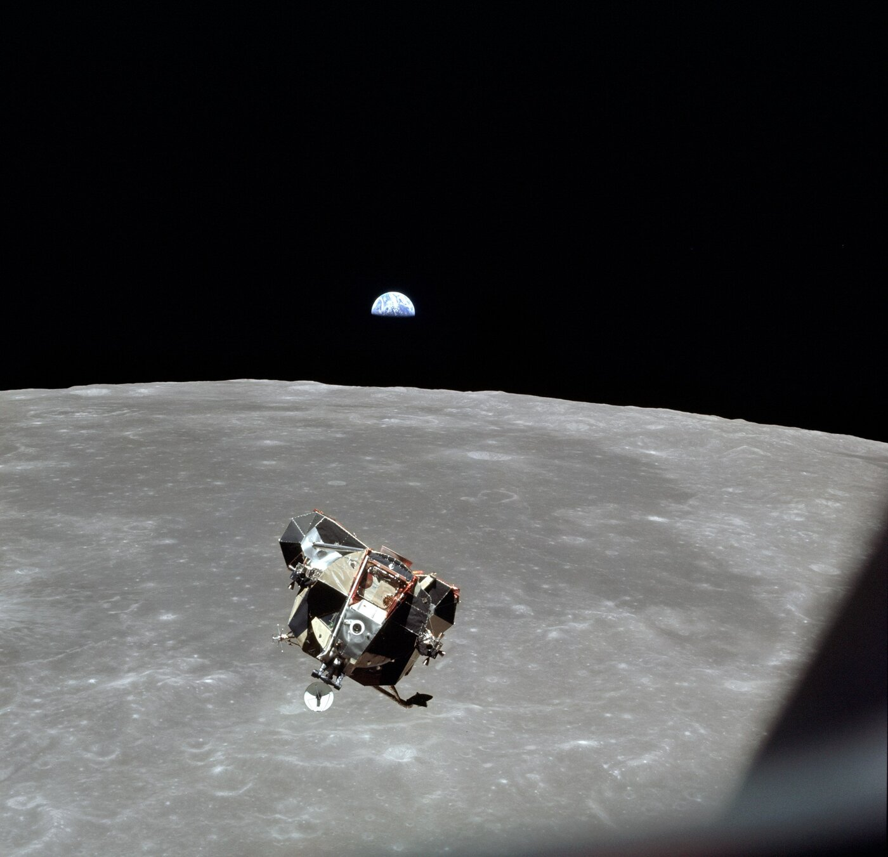

Introduction to System Architecture
Systems Architecture · Chapter 1
A Formative Decision
- June 1962: NASA commits to a dedicated descent capsule — the Lunar Module — instead of landing the Command/Service Module itself
- Decided in Apollo’s first year, seven years before the maneuver would fly — before most staff were hired or design contracts awarded
Note
This is architecture: one early decision eliminated countless possible designs and gave every downstream team a starting point.

Apollo 11 LM ascent stage, 1969. Credit: NASA / Michael Collins (public domain).
We Build Big, Complex Things
- Container ships: 480 containers (1950) → 18,000 containers today
- Cars: ~70 processors on board, connected by up to 5 buses at 1 Mbit/s — vs. 160 bit/s a generation ago
- Oil platforms: $200–800M each; 39 delivered between 2003 and 2009
Emma Mærsk, once the world’s largest container ship. Credit: Nils Jepsen, CC BY-SA 2.5.
Figure 1.1
The heavy-lift ship MV Blue Marlin transporting the 36,000-metric-ton drilling platform SSV Victoria. Source: Dockwise / Rex Features / Associated Press. Reproduced from Crawley, Cameron & Selva, System Architecture, Pearson (2016), Fig. 1.1.
Complex ≠ Just Big
- BMW: 1.5 billion potential configurations offered to customers (2004)
- Augustine’s Law: unit cost of fighter aircraft rose exponentially, 1910–1980 — extrapolated, one aircraft would consume the entire 2053 U.S. defense budget
- 30 years later, it’s holding up: F-22 Raptor, 2010 — $160M flyaway, $350M including development
F-22 Raptor, 2010. Credit: U.S. Air Force / SrA Gustavo Gonzalez (public domain).
Do These Systems Deliver?
Do they meet stakeholder needs and deliver value?
Do they integrate easily, evolve flexibly, and operate simply and reliably?
Well-architected systems do.
What Is Architecture?
Architecture: an abstract description of the entities of a system and the relationships between those entities.
- A system’s architecture can be represented as a set of decisions
- Systems are more likely to succeed if we are careful about identifying and making the decisions that establish that architecture
- The field of system architecture grew out of practitioners’ attempts to capture expert wisdom from past designs
Bet the Company
- Boeing is half of a global duopoly for large passenger aircraft
- Boeing “bet the company” on the 787 and its composite-material technology — one product, concentrated risk
- The mobile device market is far more diversified — yet BlackBerry and Ericsson still declined
Boeing 787-9 Dreamliner. Credit: Anna Zvereva, CC BY-SA 2.0.
Good architectural decisions create competitive advantage. Bad ones can hobble a firm from the outset.
Decisions Cascade
Every system built by humans has an architecture. Early decisions convey how the whole product is organized.
Hidden constraints, too: John Deere’s crop sprayer width is constrained by the column separation at the manufacturing site — obvious to the team, but easy to miss in the productivity equation.
Structured Creativity
“Structured creativity is better than unstructured creativity.”
Architecting a system is a soft process — part science, part art. No formula guarantees an optimal solution.
But focusing on decisions (not the underlying designs) lets architects trade off options and order decisions by their leverage on system performance.
Case Study: NPOESS
- 1994: merges two operational weather-satellite programs (civilian + military) — a $1.3B cost-consolidation opportunity
- The VIIRS instrument: expected to combine three historical instruments’ capability, with less mass and volume than one — assuming complexity would scale linearly. It didn’t.
- No system architect was appointed to manage the trade
VIIRS “Blue Marble,” Suomi NPP. Credit: NASA/NOAA/GSFC/Norman Kuring (public domain).
Canceled in 2010 — $8.5B over the original $6.5B estimate.
Learning Objectives
By the end of this course, you should be able to:
- Use system thinking in a product and a system context
- Analyze and critique existing architectures
- Distinguish architectural from non-architectural decisions
- Create the architecture of new or improved systems
- Place architecture in the context of value and competitive advantage
- Drive ambiguity out of the upstream process
- Manage the evolution of system complexity
- Critically evaluate current modes of architecting
Organization of the Text
Part 1 · System Thinking (Ch. 1–3)
← we are here
Part 2 · Analysis of System Architecture (Ch. 4–8)
Part 3 · Creating System Architecture (Ch. 9–13)
Part 4 · Architecture as Decisions (Ch. 14–16)
Running examples throughout: an amplifier circuit, the circulatory system, a design team, the solar system.
Principles, Methods, Tools
- Principles: underlying, long-enduring fundamentals — always (or nearly always) valid
- Methods: ways of organizing approaches and tasks — solidly grounded on principles, usually or often applicable
- Tools: contemporary ways to facilitate the process — applicable sometimes
“Principles are general rules and guidelines, intended to be enduring and seldom amended, that inform and support the way in which an organization sets about fulfilling its mission.”
— U.S. Air Force, Principles for Information Management, 1998
Next: System Thinking
Chapter 2 introduces four tasks for thinking about any system:
- Identify the system, its form, and its function
- Identify the entities of the system, their form and function
- Identify the relationships among the entities
- Identify the emergent properties of the system
Tip
Reference: Crawley, E., Cameron, B., & Selva, D. (2016). System Architecture: Strategy and Product Development for Complex Systems. Pearson. Chapter 1.

← Course Home · Systems Architecture · Chapter 1